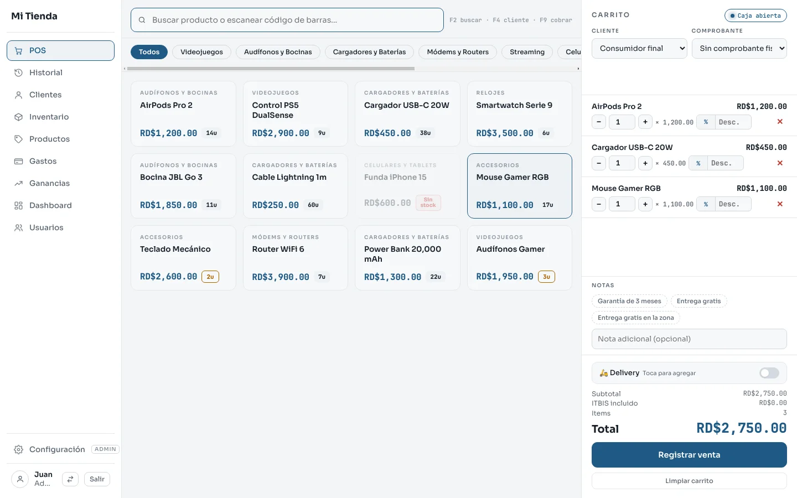
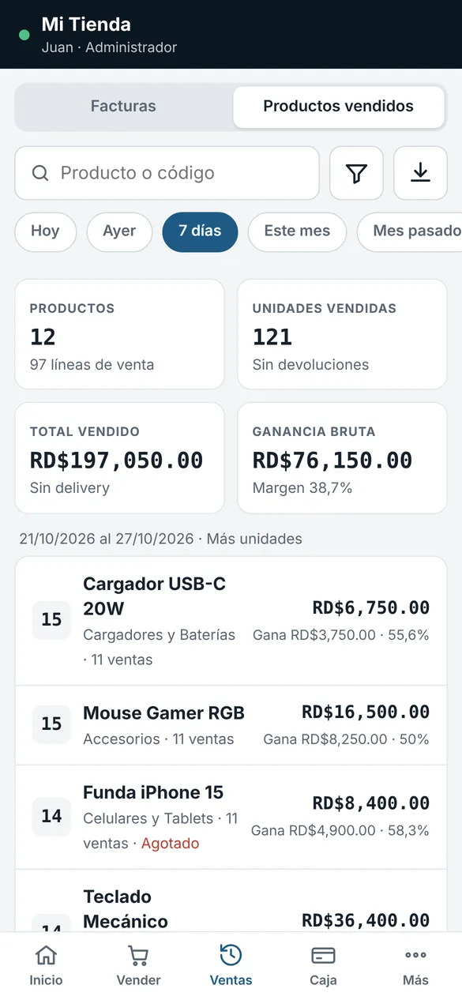
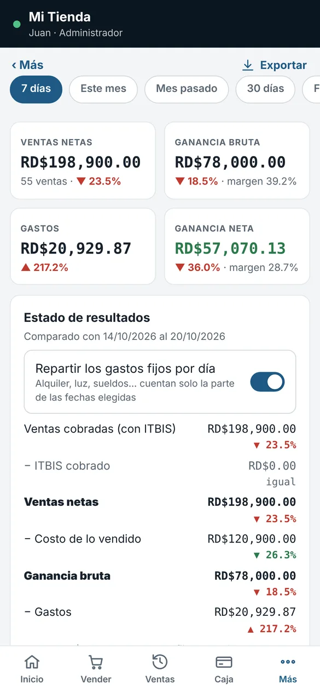

Factú
FactúVende, factura y controla tu negocio desde la PC y el celular.
Factú es el punto de venta para tiendas, colmados, ferreterías y negocios de todo tipo. Funciona sin internet, imprime tus facturas y te dice cuánto estás ganando de verdad.
Prueba gratis de 15 días con todas las funciones. Sin tarjeta.

Todo lo que tu negocio necesita para vender
Pensado para el mostrador: rápido de aprender, claro de leer y listo para los comprobantes fiscales.
Punto de venta rápido
Busca o escanea el código, cobra en efectivo, tarjeta, transferencia o a crédito, y da el cambio exacto.
Facturas con comprobante
Consumidor final, crédito fiscal y notas de crédito con la secuencia de NCF. Imprime o comparte la factura en PDF.
Inventario al día
Existencia, entradas de mercancía, ajustes y avisos de productos agotados o por reponer.
Ganancias reales
Estado de resultados con costo de lo vendido, gastos y margen. Sabes qué producto deja más.
Caja sin descuadres
Apertura, gastos de caja y cierre con lo que se contó. Ves faltantes y sobrantes de cada turno.
Clientes, crédito y vendedores
Ventas a crédito con límite y abonos. Cada vendedor entra con su PIN y solo ve lo que le permites.

Tus datos se quedan en tu negocio
Factú trabaja en tu computadora, aunque se vaya el internet. Nada de tu negocio se sube a servidores de terceros.
- Funciona sin internet, todo el día
- Copias de seguridad automáticas en tu PC y en una memoria USB
- Se actualiza solo cuando sale una versión nueva
- Reportes en Excel y PDF para tu contable
Factú Móvil: el negocio en tu bolsillo
Conecta celulares y tablets a la PC del negocio por el mismo Wi-Fi. Vende desde el pasillo, revisa la caja desde la casa y comparte facturas por WhatsApp.
Vende en cualquier parte del local
Escanea con la cámara e imprime en una impresora Bluetooth.
Todo lo de la PC
Ventas, inventario, clientes, gastos, ganancias y cierres.
Factura en PDF
La compartes por WhatsApp o correo en un toque.
Pruébala sin PC
Trae un negocio de ejemplo para que veas cómo funciona.



Empieza hoy en tres pasos
No necesitas un técnico. Si te trabas, te ayudamos por WhatsApp.
Descarga e instala
Baja Factú para Windows y ábrelo. Si Windows muestra un aviso azul, toca «Más información» y «Ejecutar de todas formas».
Configura tu negocio
Nombre, comprobantes y tus productos (los puedes importar desde Excel). Empiezas con 15 días gratis.
Conecta el celular
Instala Factú Móvil, conéctalo al mismo Wi-Fi y vincúlalo con el código que te muestra la PC.
¿Listo para comprar tu licencia?
Escríbenos por WhatsApp y te decimos el precio para tu negocio. Al comprar te damos tu clave y no pierdes nada de lo que cargaste en la prueba.
Preguntas frecuentes
Lo que más nos preguntan antes de empezar.
¿Necesito internet para usar Factú?
No. Factú funciona en tu computadora sin internet. Solo lo usa, si lo hay, para revisar si hay una versión nueva. Factú Móvil se conecta a la PC por el Wi-Fi del negocio, no por internet.
¿Qué computadora necesito?
Una PC con Windows 10 u 11 de 64 bits. Para Factú Móvil, un celular o tablet Android 7 o superior (y muy pronto iPhone y iPad).
¿Funciona con mi impresora?
En la PC imprime en cualquier impresora instalada en Windows, incluidas las térmicas de 58 y 80 mm. En el celular imprime por Bluetooth en impresoras térmicas ESC/POS.
¿Qué pasa cuando terminan los 15 días?
Tus datos se quedan guardados. Puedes ver reportes y sacar copias, pero no registrar ventas hasta que pongas tu licencia. Al ponerla sigues donde lo dejaste.
¿Cuántos celulares puedo conectar?
Depende de tu licencia. Durante la prueba puedes conectar uno para probarlo.
¿Mis datos están seguros?
Viven en tu computadora, no en la nube de nadie. Factú guarda copias de seguridad automáticas y te deja sacar una copia a una memoria USB cuando quieras.